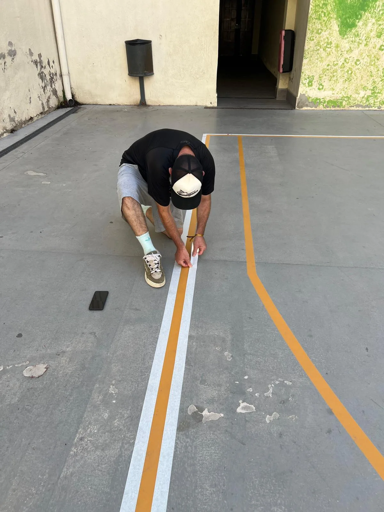
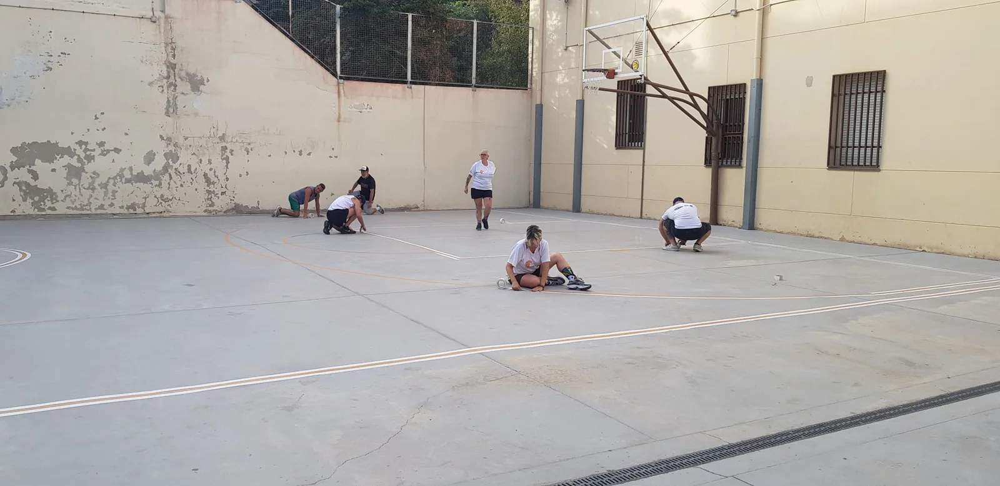
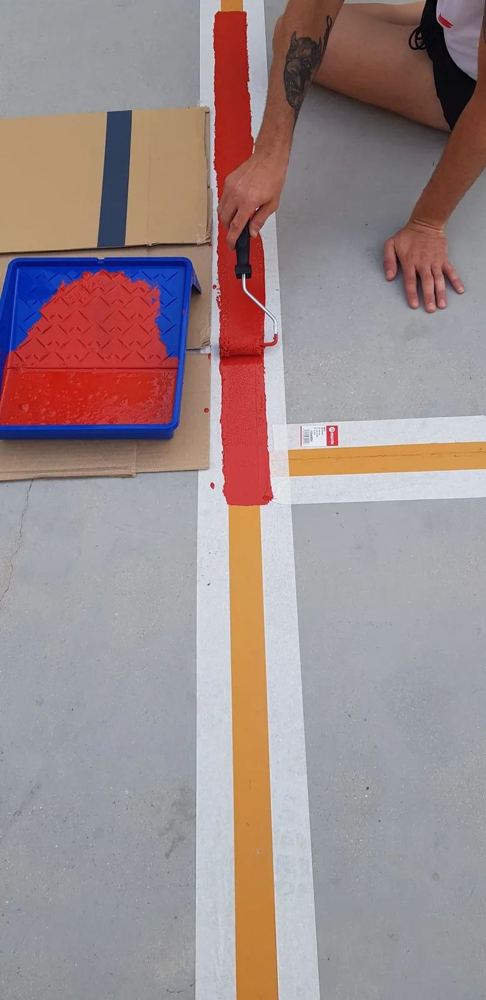
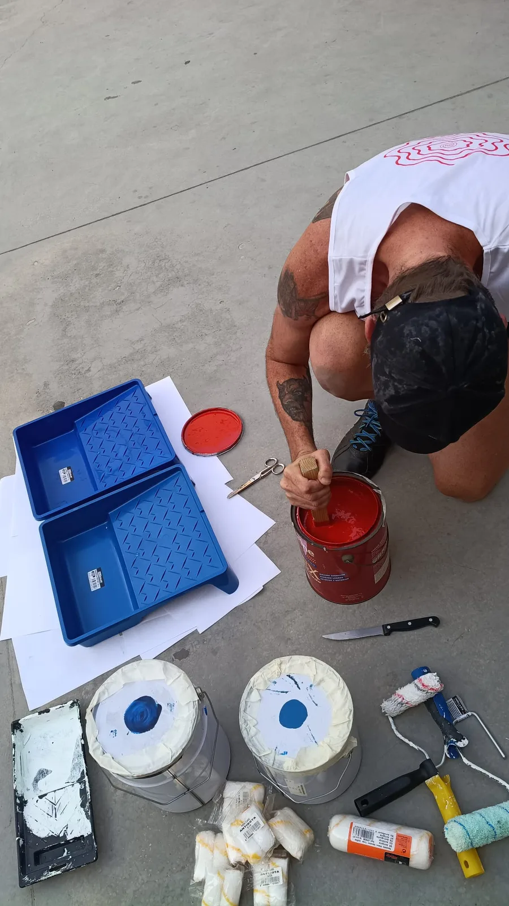
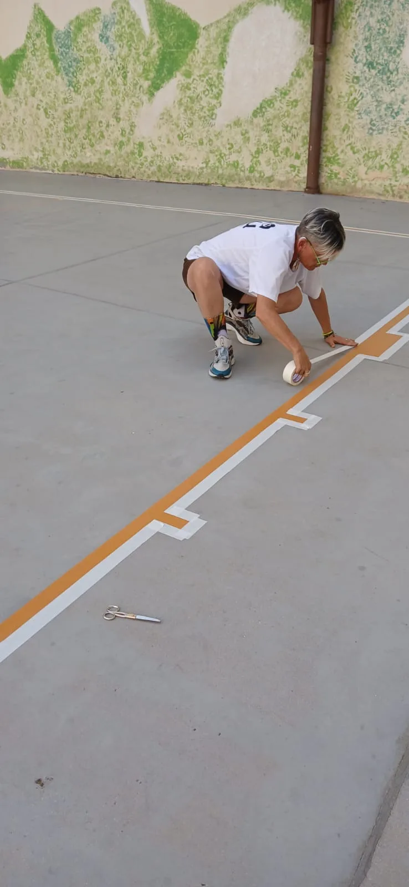
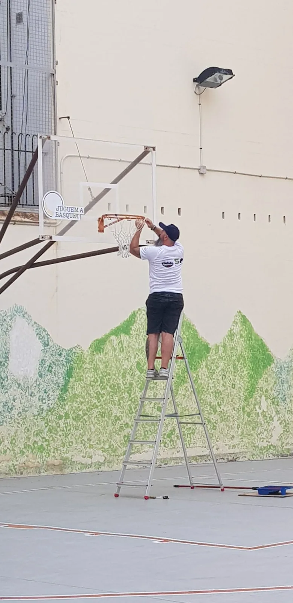
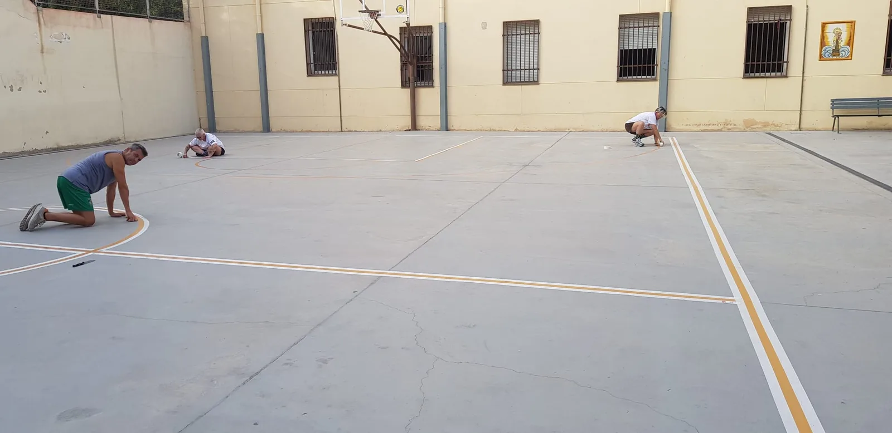
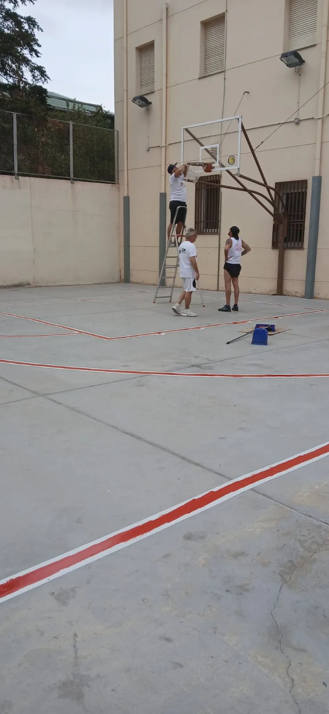
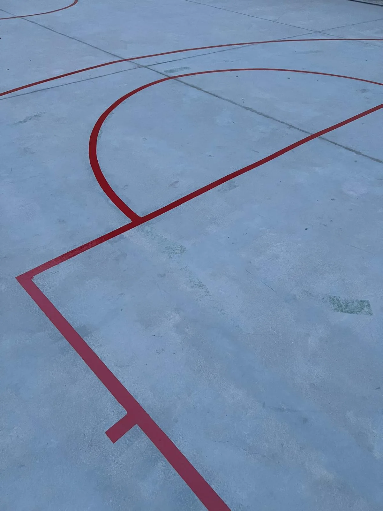

AmpliaCelebrada
La Pista
Arranjament i pintura · Carmelites

AmpliaArranjament i pintura · Carmelites
El 10 d'agost, un grup de voluntaris i voluntàries de Juguem a Bàsquet ens vam posar mans a l'obra per arreglar la pista dels Carmelites. Vam netejar la superfície, reparar la cistella i preparar-ho tot per tornar a marcar el camp.
Amb cinta, pintura i moltes ganes, vam repintar totes les línies de joc —inclosa la línia de triple— i vam deixar la pista a punt per acollir el torneig 3x3. Perquè unes pistes dignes són el primer pas per posar el bàsquet de carrer al centre de la ciutat.







